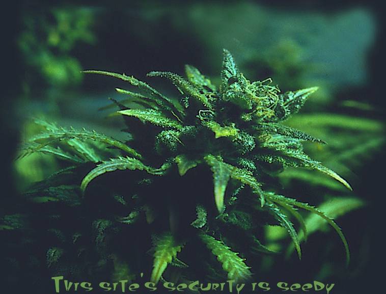

acidklown & xhostile, back again.
We defaced this website because these people are using this domain for some gaming shit when they could be enlightening the less-intelligent about that wonderful plant that's known and loved by many.
I'm talkin' about da chronic, of course! The bud, weed, green, mary jane, buddah, ganja, reefer, dope, doja, dank.. whatever you call it, it's all the same - a great plant that not only stimulates the mind but could also drastically change the way we live (were it not for the fucked up government) for the better. Hemp can produce 4 times as much paper as trees. Just think about that. It is also unknown by most that our founding forefathers were hemp farmers (George Washington toked it up). The Declaration of Independence was even written on hemp paper. There are so many uses for hemp it's crazy. It could really help farmers during droughts when regular crops cannot grow, but thanks to our fucked up government and unaware citizens, legalization may or may not be near. That's why everyone should visit www.norml.org and spread the word about our friend, herb, and let the truth be known!!!
This site was defaced for a reason, and that's how it will be from now on. No more senseless bullshit defacements. We encourage all the other little script kiddie defacers to do the same.
[ Enter this site and remember, keep toking! ]